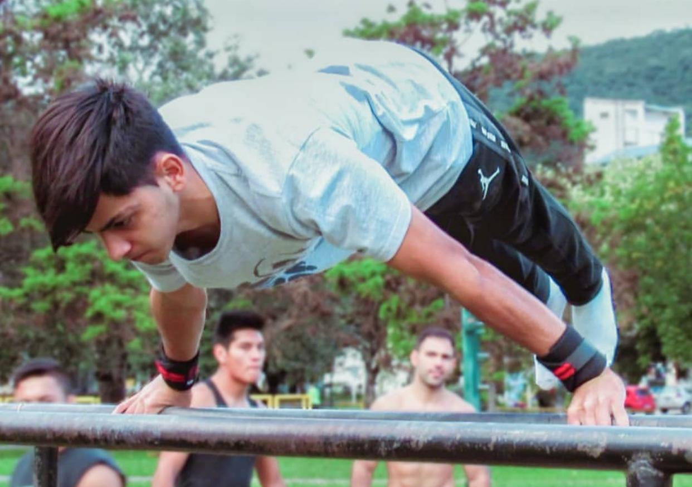

Instagram
Facebook
Como Llegar
Consultas
Precios y
Instagram
Facebook
Como Llegar
Consultas
Precios y Calistenia
Que es
La calistenia es una forma de ejercicio que consiste en utilizar el propio peso corporal para realizar varios movimientos y ejercicios, a menudo sin necesidad de equipo adicional. Los ejercicios de calistenia generalmente involucran movimientos como flexiones, dominadas, sentadillas, estocadas y tablas, entre otros. Esta forma de ejercicio se usa a menudo para mejorar la fuerza, la resistencia, la flexibilidad y el estado físico general. La calistenia se puede hacer en cualquier lugar, lo que la convierte en una forma de ejercicio conveniente y accesible para personas de todos los niveles de condición física. Es una forma popular de ejercicio entre atletas, personal militar y entusiastas del fitness.